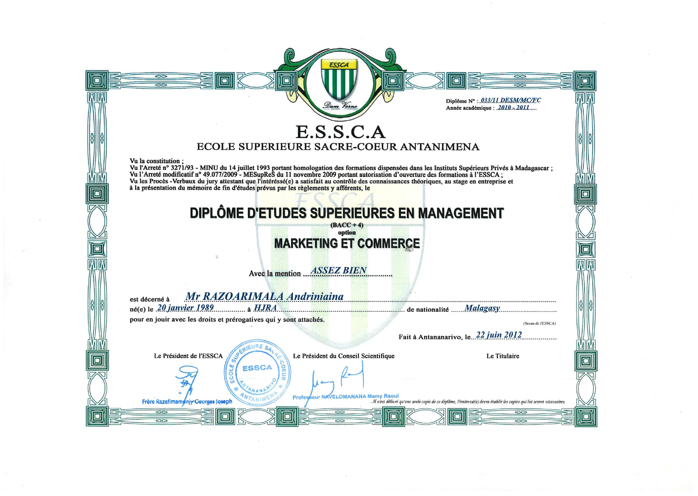
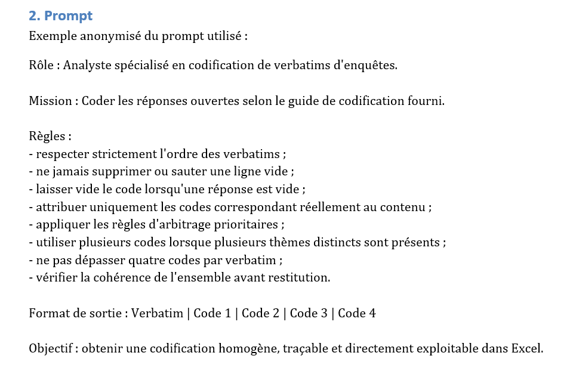
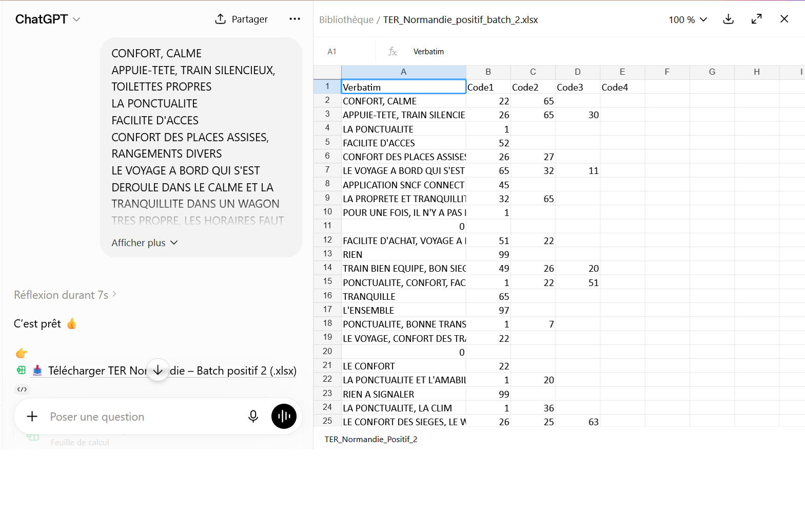
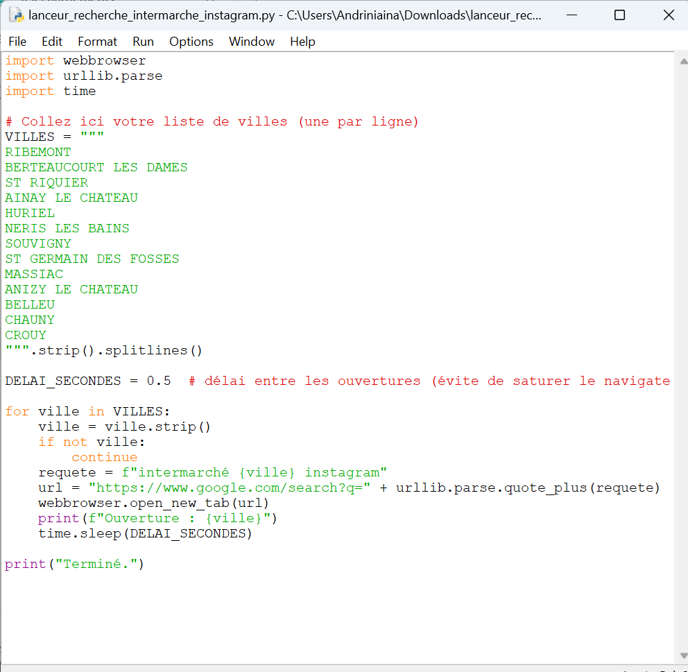
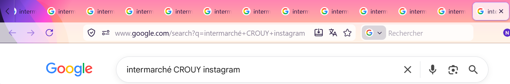
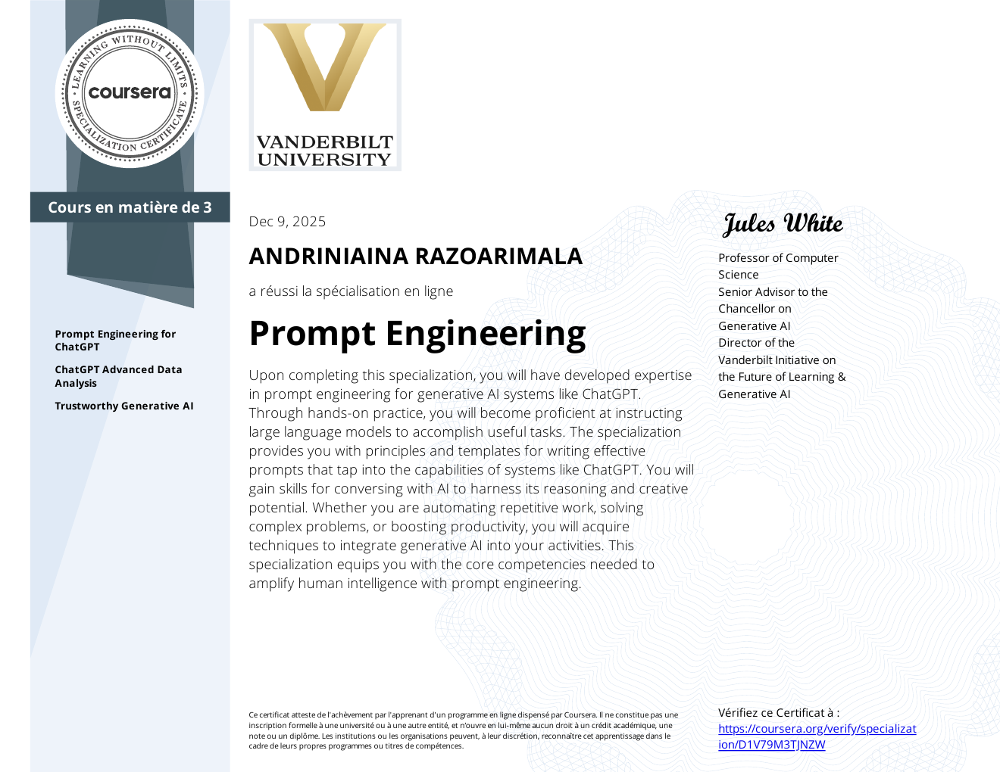
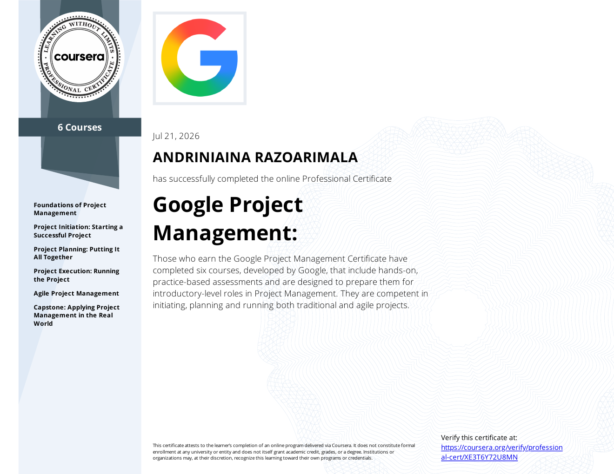

Diplôme académique
Master I
Marketing et Commerce international
Bonjour, je suis
J'analyse des besoins opérationnels, je structure les processus et je conçois des solutions assistées par l'IA et l'automatisation, avec une attention particulière à la qualité et à l'exploitabilité.
Un profil hybride : expérience opérationnelle + IA + automatisation.
Mon approche est orientée résultat : partir d'un besoin réel, le traduire en processus clair, sélectionner les bons outils et produire une solution vérifiable et exploitable.
Mon parcours combine expérience opérationnelle, travail numérique, analyse qualitative et codification de données, puis une spécialisation en IA, automatisation et gestion de projet.
Je privilégie les preuves aux déclarations : un projet réel, deux missions client et des exemples de production permettent de voir concrètement ma méthode.
Cadrage, planification, documentation, gestion des risques et suivi.
Structuration des processus, scripts et réduction des tâches répétitives.
Prompt Engineering, IA générative et structuration de tâches.
Analyse des besoins, contrôle de cohérence et amélioration.
Les compétences ci-dessous sont présentées avec des réalisations ou des preuves dans ce portfolio.
Projet personnel réel démontrant ma capacité à cadrer un besoin, concevoir une solution, résoudre des contraintes techniques et documenter son exploitation.
Étude de cas · Projet réel
Tout projet commence par une compréhension précise du problème à résoudre.
Westo QG Connected est né d'un constat simple : dans mon quartier, de nombreuses personnes avaient besoin d'un accès à Internet pour leurs activités quotidiennes, alors que les solutions disponibles ne répondaient pas toujours pleinement à leurs besoins en matière de coût, de débit ou d'accessibilité.
Le projet avait pour objectif de proposer une solution de connectivité simple d'accès et adaptée au contexte local, tout en permettant une exploitation efficace par une seule personne.
Étude de cas
Des objectifs clairs orientent les décisions tout au long du projet.
Proposer une connexion Internet abordable et facile d'accès pour les utilisateurs ciblés.
Automatiser les tâches répétitives afin de permettre une exploitation quotidienne par une seule personne.
Concevoir une infrastructure stable, documentée et facile à maintenir.
Développer une solution capable d'évoluer avec les besoins futurs de l'activité.
Étude de cas
La solution devait répondre au besoin sans ajouter de complexité inutile.
La conception de Westo QG Connected s'est appuyée sur trois principes : simplicité d'exploitation, fiabilité de l'infrastructure et possibilité d'évolution.
L'objectif était de construire une solution permettant de gérer efficacement le service au quotidien tout en limitant les interventions manuelles.
Concevoir une solution compréhensible et facilement exploitable par une seule personne.
Structurer l'infrastructure afin de disposer d'un service stable et facilement maintenable.
Prévoir une architecture capable d'évoluer avec les besoins futurs de l'activité.
La technologie devait servir le fonctionnement de l'activité, et non l'inverse.
Étude de cas · Infrastructure
Une infrastructure adaptée constitue la base d'un service fiable et simple à administrer.
L'infrastructure de Westo QG Connected a été conçue autour d'une connexion Starlink et d'un routeur Netgear R7800 configuré sous OpenWrt.
L'architecture permet de séparer les usages du réseau, de contrôler l'accès au Wi-Fi public et de centraliser l'administration du système.
Starlink fournit la connexion Internet utilisée comme base du service de connectivité.
Le routeur Netgear R7800 sous OpenWrt assure la gestion et le contrôle de l'infrastructure réseau.
La séparation des usages permet de distinguer l'accès destiné aux utilisateurs du réseau privé.
Le portail captif permet de contrôler l'accès au réseau public et de gérer les sessions utilisateurs.
Chaque composant a été intégré avec un objectif : permettre à une seule personne de gérer le système de manière aussi simple et efficace que possible.
Étude de cas · Automatisation
L'objectif était de permettre à Westo QG d'être géré par une seule personne, de la manière la plus simple et efficace possible.
Plutôt que de multiplier les interventions manuelles, certains aspects de l'activité ont été automatisés afin de simplifier l'exploitation quotidienne.
Cette approche permettait de consacrer davantage de temps aux activités nécessitant de l'analyse, de la prise de décision et de l'amélioration continue.
Mise en place de mécanismes permettant de gérer les accès Wi-Fi et leur durée sans intervention manuelle constante.
Automatisation de certaines opérations afin de réduire les manipulations quotidiennes et standardiser les processus.
Possibilité d'administrer et de superviser le système à distance à l'aide d'outils comme TeamViewer.
L'ensemble de ces choix avait pour objectif de rendre l'activité plus simple à exploiter par une seule personne.
Automatiser ce qui pouvait l'être afin de réduire la complexité opérationnelle, tout en conservant à l'humain les tâches nécessitant jugement, analyse et décision.
Étude de cas · Résultats
Un projet se mesure par la valeur qu'il apporte et par sa capacité à répondre durablement au besoin.
Westo QG Connected a permis de transformer un besoin concret de connectivité en une solution opérationnelle, structurée et administrable.
Les résultats sont avant tout visibles dans la simplification de l'exploitation, l'organisation de l'infrastructure et la capacité à administrer le système avec un minimum d'interventions manuelles.
Le système a été conçu pour réduire la complexité des opérations quotidiennes et faciliter sa gestion par une seule personne.
La possibilité d'administrer le système à distance réduit la dépendance à une présence physique permanente sur place.
La documentation, les procédures et les mécanismes d'automatisation ont contribué à rendre l'exploitation plus reproductible.
L'architecture mise en place constitue une base pouvant être adaptée et améliorée en fonction des besoins futurs.
Un projet technologique peut apporter davantage de valeur lorsqu'il est conçu autour de la simplicité d'exploitation, de l'automatisation et de l'amélioration continue, plutôt que de la seule performance technique.
Étude de cas · Retour d'expérience
Chaque projet constitue une occasion d'apprendre, d'améliorer ses méthodes et de faire évoluer ses solutions.
Westo QG Connected m'a permis de mettre en pratique une approche complète allant de l'identification d'un besoin réel jusqu'à la conception, la mise en œuvre et l'amélioration d'une solution opérationnelle.
Le projet m'a également permis de mieux comprendre l'importance de la simplicité, de l'automatisation et de la documentation lorsqu'une solution doit être exploitée durablement par une seule personne.
Une solution pertinente commence par une compréhension précise du problème à résoudre et du contexte dans lequel elle sera utilisée.
Une solution efficace n'est pas nécessairement la plus complexe. Elle doit surtout rester compréhensible, exploitable et maintenable.
L'automatisation prend toute sa valeur lorsqu'elle réduit réellement la complexité opérationnelle et libère du temps pour les tâches à plus forte valeur.
Une bonne documentation facilite la maintenance, la transmission des connaissances et l'évolution future du projet.
Westo QG Connected m'a confirmé qu'une approche structurée permet de transformer progressivement un besoin concret en une solution exploitable, documentée et évolutive.
Étude de cas · Preuves
Des éléments concrets illustrant la conception, la mise en œuvre et l'exploitation de Westo QG Connected.

Éléments matériels utilisés pour construire l'infrastructure de connectivité du projet.

Représentation de l'organisation des différents composants de l'infrastructure.

Capture de l'environnement d'administration du routeur utilisé dans le projet.

Interface utilisée pour gérer l'accès des utilisateurs au réseau public.

Exemple d'un processus automatisé destiné à simplifier la gestion des utilisateurs.
Extrait du document de cadrage du projet.
Exemple de documentation utilisée pour identifier et suivre les risques du projet.
Extrait du retour d'expérience réalisé à la fin du projet.
Support de communication ou présence numérique liée à l'activité.
Élément démontrant l'utilisation réelle du système dans le cadre de l'activité.
Les captures et documents présentés seront sélectionnés et, si nécessaire, anonymisés afin de préserver les informations sensibles tout en démontrant concrètement le travail réalisé.
Mission client
Codification de verbatims
Transformer des réponses ouvertes de voyageurs en données structurées et exploitables.
La mission consistait à analyser et coder des verbatims issus d'une enquête de satisfaction TER Normandie.
Plusieurs centaines de verbatims nécessitaient une analyse cohérente, précise et répétitive.
Pour répondre à cette problématique, j'ai conçu un prompt structuré afin d'appliquer de manière homogène le guide de codification fourni pour la mission.
Le prompt intégrait les règles de codification, les règles d'arbitrage, la gestion des réponses vides et le format de restitution attendu.
Obtenir une codification homogène, traçable et directement exploitable dans Excel.
La méthode mise en place a permis de transformer plusieurs centaines de verbatims en données structurées, tout en conservant les règles d'arbitrage et le format attendu.
Le travail a également permis d'affiner un guide d'arbitrage réutilisable, afin de rendre la codification plus cohérente sur les cas similaires.
Exemples anonymisés du travail réalisé dans le cadre de la mission.

Exemple anonymisé du prompt structuré utilisé pour la codification des verbatims.

Exemple anonymisé de verbatims transformés en données codifiées.
Mission client
Recherche et identification de comptes Instagram de commerces locaux.
Identifier les comptes Instagram locaux correspondant à une liste de magasins fournie par le client.
La difficulté était de retrouver le maximum de comptes pertinents malgré les variations de noms, les différentes formes de présence sur Instagram et les résultats de recherche parfois incomplets.
Pour répondre à cette problématique, j'ai mis en place une méthode de recherche structurée combinant recherche web, identification de variantes et vérification des résultats.
L'utilisation de l'IA a permis de structurer la recherche et d'améliorer la capacité à identifier les comptes pertinents à partir des informations fournies par le client.
L'approche a progressivement intégré des outils permettant de réduire les tâches répétitives et d'accélérer le traitement d'une liste importante de commerces.
La démarche a permis de structurer la recherche de comptes Instagram locaux et de vérifier les résultats à partir de la liste fournie par le client.
Le travail a également permis de formaliser une méthode reproductible et d'introduire un outil Python pour réduire une partie des tâches répétitives du processus.
Exemples anonymisés du travail réalisé dans le cadre de la mission.

Outil développé pour automatiser une partie des tâches répétitives liées au processus de recherche.

Exemple concret d'une recherche effectuée dans le cadre de la mission InterFinder.
Une progression de l'opérationnel vers l'analyse, la qualité, l'IA et la conception de solutions.
Les fondations · Comprendre les clients
Pendant cette période, j'ai acquis une solide expérience dans la relation client, la vente, le management d'équipe et la gestion opérationnelle d'un point de vente.
En évoluant d'animateur Mobile Money à responsable de magasin, j'ai appris à prendre des décisions au quotidien, à organiser les opérations, à accompagner une équipe et à maintenir un niveau élevé de qualité de service.
Les opérations numériques
Cette expérience m'a permis de travailler sur des opérations numériques à grande échelle, avec des procédures précises, des exigences de qualité et des volumes importants.
J'y ai renforcé des compétences directement transférables aux métiers de l'AI Quality : analyse qualitative, codification, contrôle de cohérence, modération et respect de guidelines.
La transition
Cette période marque un tournant dans mon parcours.
En parallèle de mon activité professionnelle, j'ai entrepris de développer mes compétences en gestion de projet et en intelligence artificielle à travers plusieurs certifications internationales.
Cette démarche s'est concrétisée par la conception de Westo QG Connected, premier projet réunissant dans une même réalisation :
Un socle académique complété par des spécialisations directement mobilisées dans mes projets et missions.

Diplôme académique
Marketing et Commerce international

Coursera · Vanderbilt University
Spécialisation en ingénierie des prompts et utilisation des systèmes d'IA générative.
Vérifier le certificat ↗
Coursera · Google
Professional Certificate consacré aux fondamentaux de la gestion de projet.
Vérifier le certificat ↗Un projet, une mission ou une collaboration ? Échangeons.
Je suis ouvert aux missions et collaborations dans les domaines de la gestion de projet, de l'automatisation, de l'intelligence artificielle et des opérations numériques.